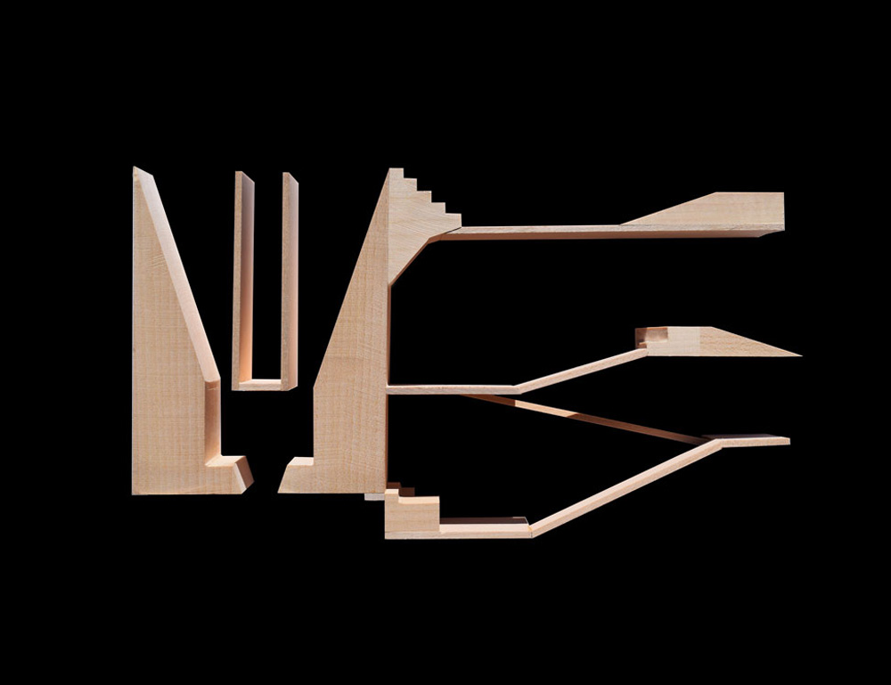
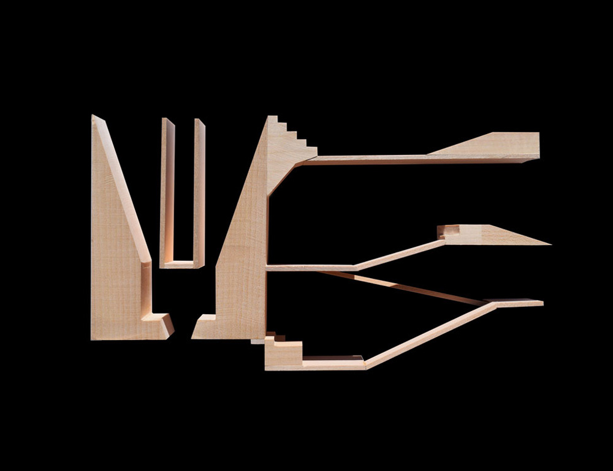
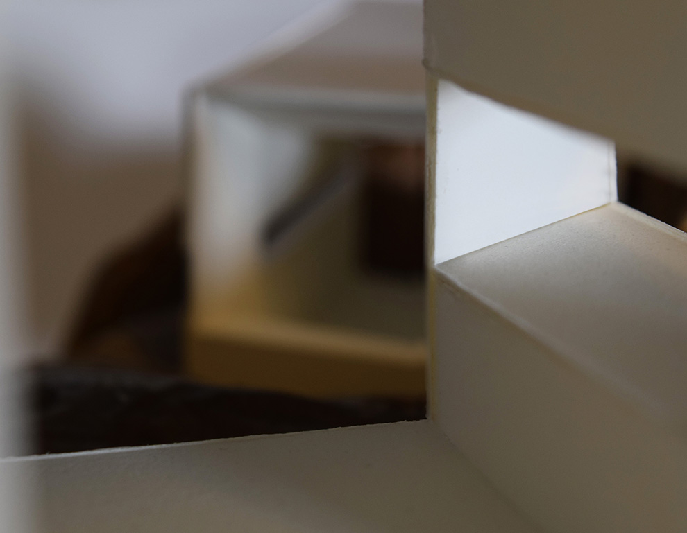
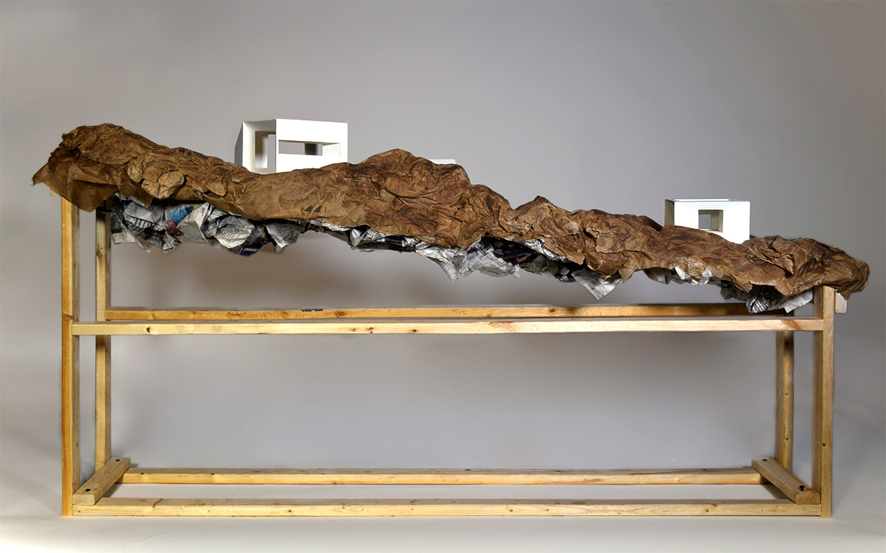
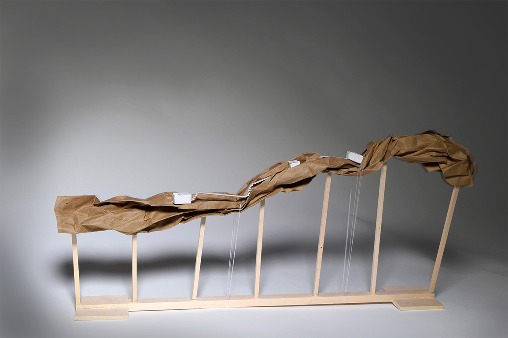
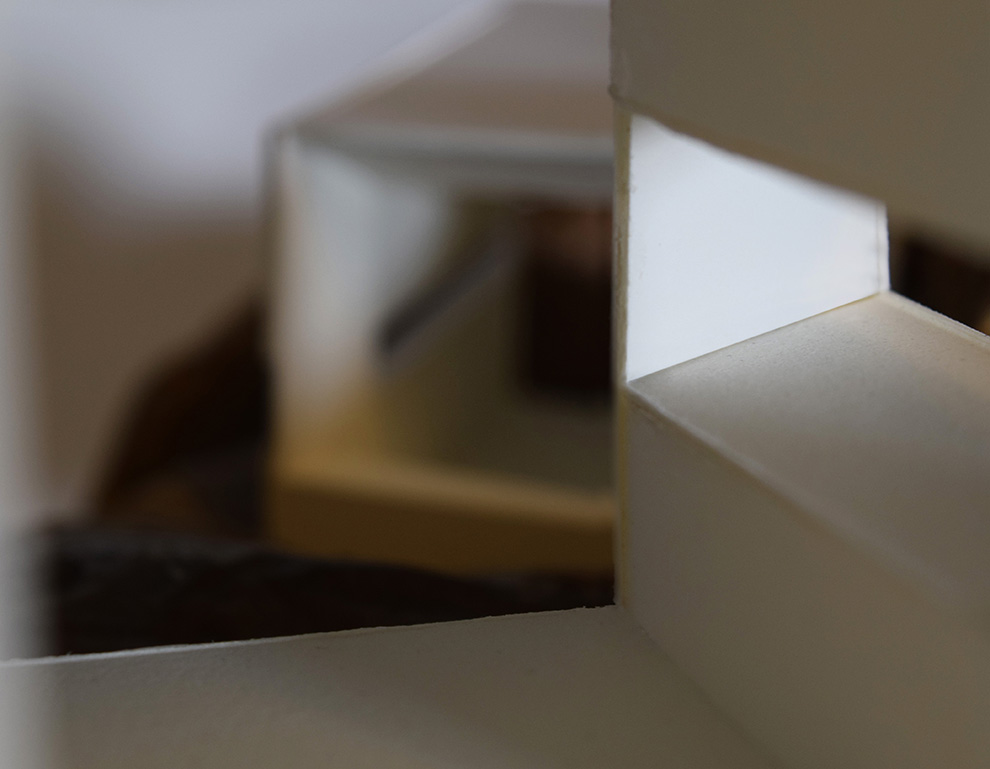
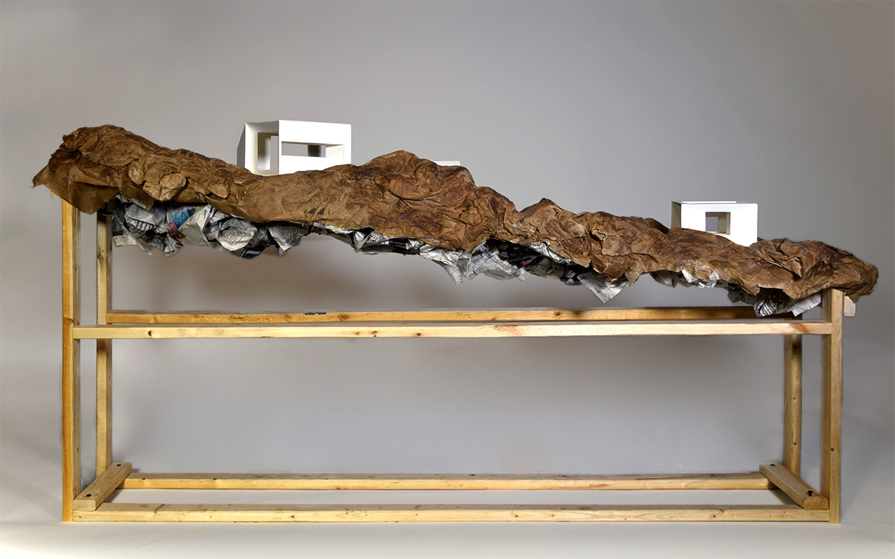
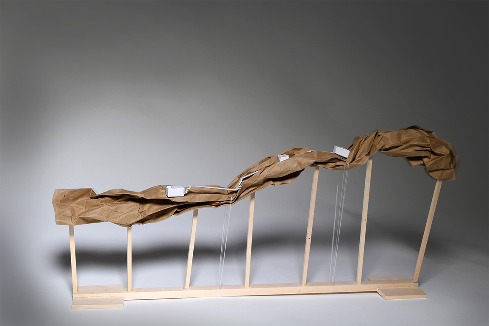
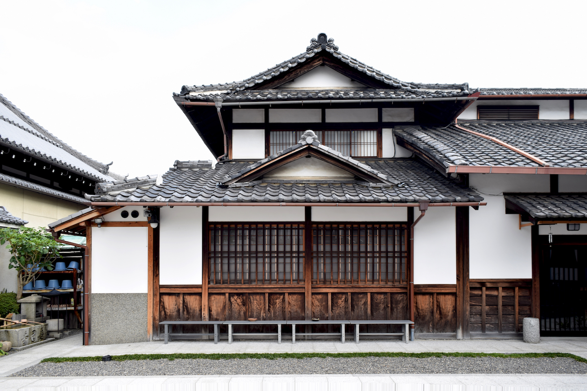
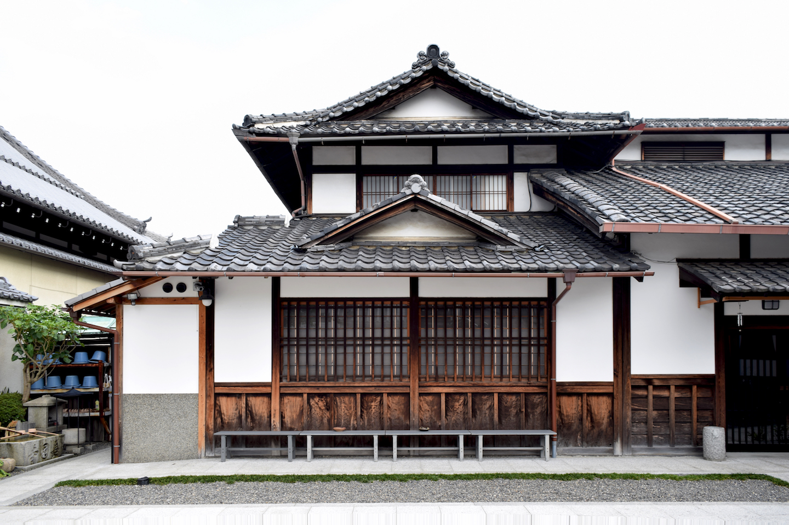

The Gatehouse
Given a site on the Gowanus Canal in Brooklyn, this project focused on designing a gatehouse on the canal. The gatekeeper is the Ancient Mariner from Samuel Taylor Coleridge’s “The Rime of the Ancient Mariner"; the poem is split into six parts, and each becomes a sectional moment that recreates the psychological or emotional state of the episode through architecture.
Bas Relief
Like a traditional carved bas relief, this piece is only three inches deep, but through the use of perspective and illusion implies an immense space beyond its narrow frame.

The Playbook
The playbook is composed of every page in the Oxford English Dictionary that contains the word "performance." The pages are excised and linearly notated to trace the progression of "performance" throughout the text. The book itself is a performative object, while taking on the spatial and structural attributes of the media.


Performance Space
A system of screens creates an immersive stage for performance, playing with perspective so as to lead the viewer through the entire performative act. These screens shift and recombine to form not just the two-dimensional "stage," but also circulation and seating. The building draws from the conditions of the site to bring even the passerby into the space of performance.


The Analytic Model, Villa Shodhan
A semester-long study of Le Corbusier’s Villa Shodhan (1951-56) as an analysis of the formal and conceptual armature of the building. The four models and drawings address the building's tectonics, contour, massing, and program.
 





Villa in the Landscape
Focusing on framed views, each unit of the villa is made up of massive chamfered walls from which programmatic elements are carved. Though each unit functions as a frame for the next, the chamfering of the walls renders the view beyond seemingly two-dimensional, challenging the significance of the successive view.


Kit of Parts
The villa Casa Malaparte (1937) is reinterpreted as a toy-like set of core principles -- a "kit of parts." The kit, when closed, operates as a prison-like cell, but opens to become an infinitely variable landscape into which stairs must lock to hold it in place. The villa’s monumental staircase thus becomes the essential tectonic element of the entire landscape.


 


Japan, Robert C. Bates Fellowship and Summer Fellowship in Japan
This six-week independent summer research project focused on spatial concepts of Japanese carpentry, specifically wooden joinery, and its relation to aesthetic philosophy. The project served as a foundation for a senior project in the architecture major.


Arizona, Harvey Geiger Fellowship in Architecture
With the Harvey Geiger Fellowship, I pursued an independent research project into the American pilgrimage to the National Parks, visiting the Grand Canyon and the Antelope Canyon in Arizona. The project focused on the idea of an aesthetic pilgrimage and its relation to the vastness of these natural geologies.


Watercolors


Drawing